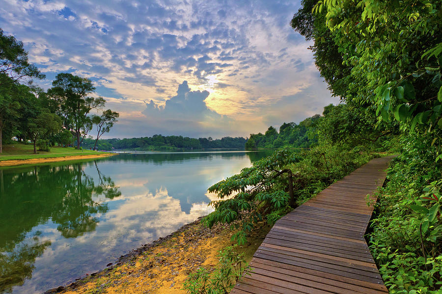

MacRitchie Reservoir Park is a popular spot for everyone with a love for nature and exercise enthusiasts. Recreational activities are readily available for people from all ages. It has undergone a complete makeover under the Active, Beautiful, Clean Waters (ABC Waters) Programme. [Click here for more information]
This program aims to transform all network of drains, canals and reservoirs into beautiful and clean streams, rivers and lakes that will be surrounded by parks and green spaces.In addition, the ABC Waters Programme creates new community spaces to enhance better environment for everyone to improve our quality of life. The major makeover commenced in the Year 2009 and 2011 providing better facilities for the community.

In 1852, John Turnbull Thomson, a British civil engineer have made proposal that a reservoir be built from the headwaters of the Singapore Creek. However, there insufficient support from the officials and public interest. The plans for a reservoir was put aside until the appearance of Mr Tan Kim Seng, a Straits Chinese merchant whom donated $13,000 in 1857 for improvements to be made for Singapore's waterworks. In 1864, official approvals and funds was granted for the construction of a damn for the collection of water. With 3 years of construction, the reservoir was completed in 1867 calling it The Impounding Reservoir.In 1877 the construction was officially completed with proper set of pumps and distribution network. The Impounding Reservoir was then renamed to Thomson Road Reservoir in 1907. Due to the massive increase of water demands in 1891, plans were proposed to expand the reservoir under the direct supervision of Municipal Engineer James MacRitchie.In 1922 , the reservoir was then renamed MacRitchie Reservoir to honour the works from Mr James MacRitchie. [James MacRitchie]
Running Tracks and Exercise corners are readily available for all sports enthusiasts
MacRitchie 25/Volvic Forest Force 50/Force of Nature Marathon are all events that has used MacRitchie Reservoir as their running catergories
MacRitchie Reservoir's calm water allows for another kind of recreational activity: Kayaking/Canoeing Public are allowed to rent closed deck and sprint kayaks, children of the age of below are not allowed to participate in the activity.
Public that are a fan of nature can take a hike into the reserves to enjoy the nature within the forested areas with no charges incurred.The trails stretches from 3.2km to 4.8km . This activity are not only suitable for all ages,it can be treated as a family/friends bonding time. In addition, it help bring everyone closer to nature.
Shinto Shrine [Syonan Jinja]
Syonan Jinjia is also known as Light of the South Shrine ,this is being constructed by the Japanese Imperial Army during the Japanese Occupation of Singapore in WW2. The Shrine was declared as a Historic Site by the National Heritage Board in 2002. It is envisioned to be a shrine that commemorated the many Japanese soldiers and military personnel who fell in the Japanese conquest of Singapore.It was also known to be the 2nd greatest shrine of the Shinto faith after the Meiji Shrine in Tokyo, Japan. However, due to safety reasons, these areas has been kept away from the public.
Map Of MacRitchie Reservoir
MacRitchie is located at the center of Singapore, making it very convenient for everyone to travel there for a day or two of relaxation! MacRitchie Resevoir warmly welcomes anyone from all ages.Be there to support anyone to enhance healthy living and family bonding time among all in the near future!